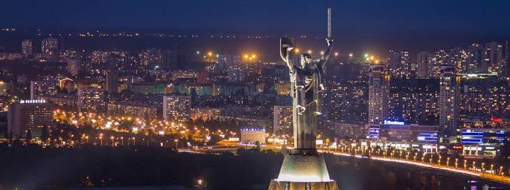

Дата та місце народження: 24 лютого 2007 року, м. Бровари, Україна.
Освіта: Броварський ліцей № 2 ім. В.О. Сухомлинського; Навчально-науковий інститут / Факультет інформатики та обчислювальної техніки (ФІОТ) НТУУ «КПІ ім. Ігоря Сікорського», спеціальність 126 «Інформаційні системи та технології».
Київ — столиця та найбільше місто України, розташоване на берегах річки Дніпро. Місто поєднує багатовікову історичну архітектуру Подолу та Верхнього міста із сучасним динамічним ритмом, затишними парками на схилах Дніпра та активним студентським і культурним життям.
